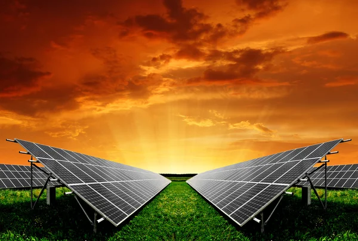
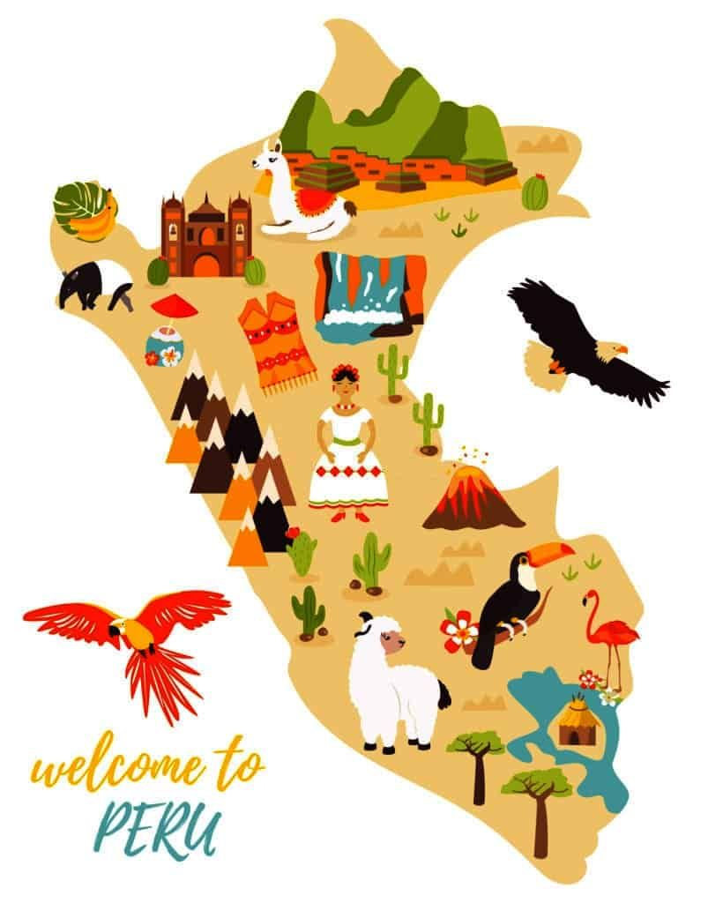

¿Por qué cuidar el medio ambiente?
El medio ambiente es nuestro hogar común y la fuente esencial de recursos que sostienen la vida. Desde el aire que respiramos hasta el agua que bebemos, todo depende del equilibrio ecológico que debemos preservar. La destrucción de los ecosistemas no solo afecta a las especies animales y vegetales, sino que también pone en riesgo nuestra salud, economía y bienestar futuro.
Fuentes de Energía Renovable
La energía renovable representa una alternativa limpia y sostenible frente a los combustibles fósiles. Fuentes como la solar, eólica e hidráulica no solo reducen la contaminación ambiental, sino que también promueven el desarrollo económico responsable. Adoptarlas es dar un paso firme hacia un futuro más verde y resiliente.
Explora más sobre el medio ambiente
Haz clic en el mapa interactivo para conocer organizaciones que trabajan a favor de la sostenibilidad y cómo puedes involucrarte en campañas ambientales desde tu comunidad.
